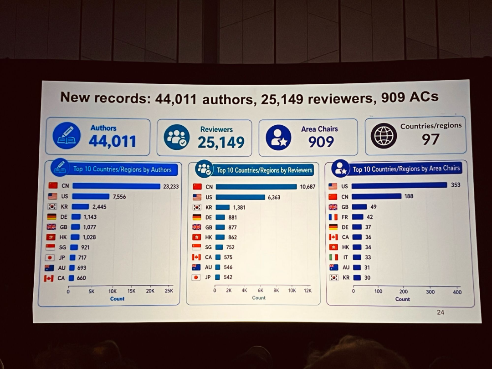

AI Daily: Alibaba Debuts Official NBA Chat LLM; Ideogram 4.0 Goes Open-Source; OpenAI Revamps ChatGPT Memory
Welcome to AI Daily — your daily briefing on the world of artificial intelligence.
Explore new AI products at: https://app.aibase.com/zh
1. Ideogram 4.0 Open-Sourced: 9.3B Parameters Deliver Industry-Leading Text Rendering; DesignArena Ranking: Global No. 4
Ideogram 4.0, an open-source image generation model, has emerged as a compelling alternative for poster production and visual content creation, driven by superior text-rendering performance and design controllability.

Ideogram 4.0 employs a single-stream architecture to improve text-visual alignment. Its 9.3B parameters underpin the strongest text-rendering AI to date.
2. NBA China and Alibaba Unveil First Official LLM: 'NBA Chat'
NBA China, in collaboration with Alibaba, has introduced the first official LLM, NBA Chat. Built on Alibaba's Qwen foundation model, it integrates historical NBA game data and deep player analytics.

NBA China and Alibaba jointly launched the first official LLM, NBA Chat. Powered by the Qwen foundation model, it fuses game data with player analytics.
3. OpenAI Revamps ChatGPT Memory: Dreaming V3 Mechanism Targets Staleness and Accuracy
OpenAI executed a significant architectural overhaul of ChatGPT's memory system, introducing a Dreaming V3-based framework designed to resolve persistent issues of staleness and inaccuracy.

ChatGPT memory, powered by Dreaming V3, now auto-updates user profiles. Compute consumption has been reduced to one-fifth of prior levels.
4. Tencent Document Introduces 'Human-AI Dual Writing' — Natively Integrated with WorkBuddy for an AI-Native Editor
Tencent Document unveiled 'Human-AI Dual Writing,' enabling real-time, same-screen collaboration between users and AI. The capability supports complex data processing and automated visualization generation.

Tencent Document launches 'Human-AI Dual Writing.' AI handles text completion, data cleansing, and chart generation.
5. xAI Debuts Grok Imagine Video 1.5: Still Image to Short Video in Seconds; Direct Rival to Google Veo
xAI officially launched the preview of Grok Imagine Video 1.5, capable of converting static images into short video clips with output supporting up to 720p resolution.

xAI releases Grok Imagine Video 1.5 — images to video in seconds. Output supports up to 720p resolution.
6. Wild Mushroom Photo ID Results in 'Misidentification'? Doubao Responds: AI Recognition for Reference Only
Doubao AI misidentified wild mushrooms but concurrently issued multiple high-risk warnings, advising users against consumption.
AI-generated identifications are advisory only. High-risk warnings were issued. Experts recommend cross-verification through multiple sources.
7. Zhihu Q1 Profits via Cost Discipline: Can AI-Generated Short Dramas and Comics Fuel Revenue Growth?
Zhihu's Q1 earnings reveal a revenue decline alongside a return to profitability, with AI-generated short dramas and comic series identified as the primary growth engines.
Zhihu's Q1 revenue declined, yet profitability was restored. AI short dramas and comic series emerged as the core growth drivers.
8. Tencent Cloud ADP 4.0 Launched: Claw Mode Delivers One-Command Agent Generation and One-Click System Integration
Tencent Cloud ADP 4.0 is now available, introducing Claw mode to significantly enhance enterprise Agent development efficiency.
ADP 4.0 introduces Claw mode, bridging enterprise systems via Connectors and Skills. Security governance has been enhanced.